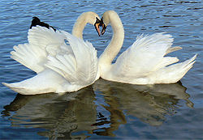

Лебеді

Пір'я лебедів буває або чисто біле, або ж сірого чи чорного кольору. Забарвлення птахів залежить від
кліматичних умов, в яких вони проживають: якщо вони живуть у південних (тепліших) областях, оперення
буде темнішим, а якщо у північних (холодніших) — більш світлим. Самиць і самців дуже важко
відрізнити, так як особливих відмінностей зовнішності вони не мають. Білий лебідь має значні розміри
тулуба, масу від 10 до 13 кілограмів. Довжина тіла дорослих особин досягає 120—180 сантиметрів.
Витончена, довга шия дає змогу добувати їжу з самого дна водойм не занурюючись повністю. Розмах крил
становить близько 2 метрів. У залежності, до якого виду належить представник, розміри тіла
варіюють[1]. Оперення щільне та водонепроникне. Добре розвинена куприкова залоза. Під час линяння
чисельність оперення зменшується, відповідно йому стає проблемою злетіти, через що у цей період
зростає ризик лебедя стати жертвою[2]. У лебедів поперечні вирости країв дзьоба перетворились на
зубці, що слугують птахам для утримання здобичі, дзьоб сірий або чорно-жовтого кольору[3]. Лебеді є
найбільшими водними птахами. Якщо представник виду за розміром такий як і гуска, лебедя можна
відрізнити за наявним наростом при основі дзьоба. Лапи темного кольору, досить короткі, через що
лебеді, пересуваючись по землі, справляють враження незграбних. Зате у них дуже розвинена літальна
(гладенька) мускулатура, що дозволяє їм долати тисячі кілометрів на їх щорічних перельотах на
південь і назад. У разі небезпеки лебідь сильним ударом крила може завдати значної шкоди ворогові
(зламати кістку чи навіть вбити не великого хижака[4]). Також лебеді володіють хорошим зором, таким
чином вони бачать усе під водою, коли вони плавають, що дозволяє їм вчасно втекти від хижаків.у разі
втечі лебідь широко махає крилами і ніби біжить по воді, розвиваючи при цьому велику швидкість[5].
Лебеді є моногамним птахами (тримаються однією парою до кінця життя). Якщо самець чи самка помирає,
інший партнер не шукає пари вдруге. Потомство виводиться обома батьками, що опікуються своїм
молодняком протягом року після народження.
Пташенята у лебедів народжуються пухнасті, сірого забарвлення, молоді особини мають рожевий дзьоб і
кінчик чорного кольору[4], незалежно від виду, колір і структура оперення змінюється через три роки
життя. Розвиваються пташенята швидко, тому вже через кілька днів після народження можуть самостійно
плавати разом із батьками. При наявності потомства самки стають неспокійні та агресивні, захищаючи
своїх пташенят[4]. На відміну від інших видів птахів, пташенята лебедів не залишають гнізда одразу ж
як тільки навчились літати, батьки піклуються та навчають своє потомство до двох років життя, для
того щоб вони могли вижити якщо залишаться без батьків.[2]
З турботою лебеді відносяться не лише до свого партнера і потомства, але й до інших родичів, таким
чином при нездужані одного з членів зграї, лебеді можуть відкласти переліт до його одужання[4].
Найближчими родичами лебединих, з точки зору зоології є гуси і качки[2].
Почитати
Більше